| 日付 | 2023年5月2日（火） |
|---|---|
| 山域 | 伊豆 |
| メンバー | 家族（妻） |
| 山行形態 | 日帰り |
| アクセス | 車 |
| ルート (Map) | 天城縦走登山口 (9:43) - (9:57) 四辻 - (10:43) 万二郎岳 - (11:47) 万三郎岳 (12:27) - (13:03) 涸沢分岐点 - (14:11) 四辻 - (14:24) 天城縦走登山口 |
本日は全国的な晴れ予報。
道路の混雑がどうなるか予想ができないため、中央道と関越は敬遠し、
東名で行ける天城山に行ってみることにする。
16年振りの本当に久し振りの訪問だ。
天城縦走登山口の駐車場に車を停める。標高1045m。
登山者用駐車場はもう一杯で、ゴルフ場の駐車場に停めさせてくれた。
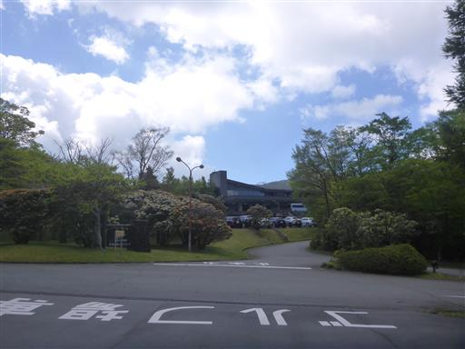
登山道入口。
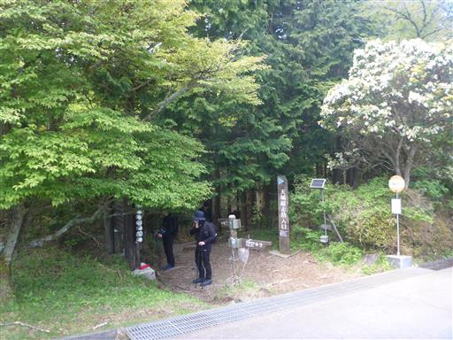
ヒメシャラの木だろうか？立派な大木だ。
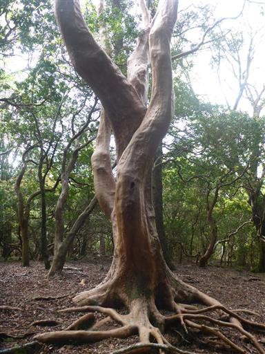
歩き始めてほどなく、四辻に到着する。
ここから周回コースを歩く予定だ。
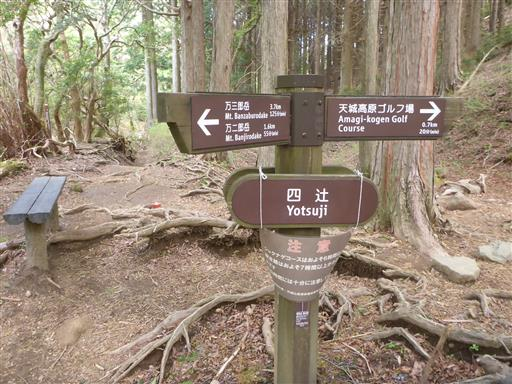
周囲は鬱蒼とした森だ。
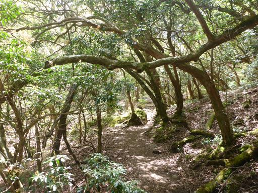
登山道を表す標識。ウクライナの国旗みたいだ。
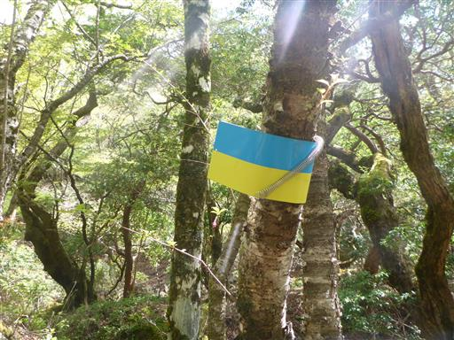
天城の森を見渡す。
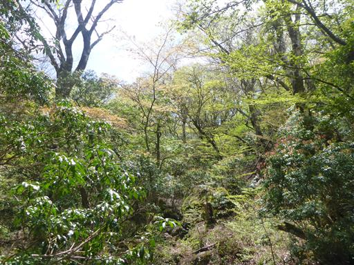
リョウブ。こんな大きなリョウブはあまり見かけない。
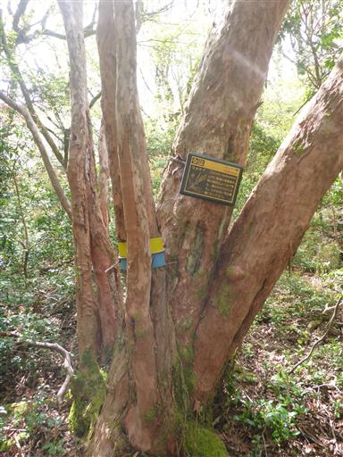
外国人の訪問が多いのか、4ヶ国語で書かれている。
わざわざ4ヶ国語で書くほどのメッセージではない気もするが…
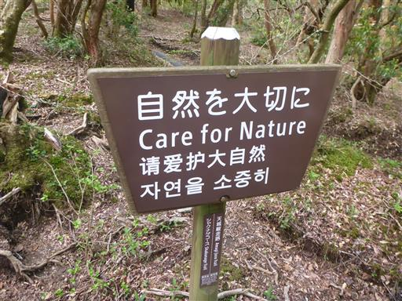
こちらはアマギツツジ。
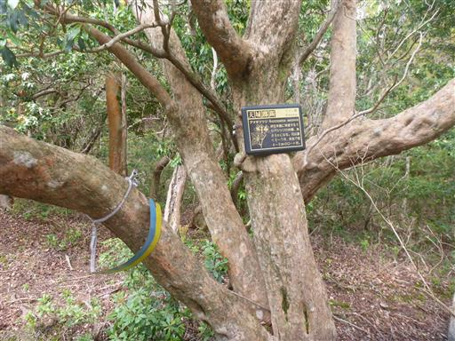
万二郎岳に到着。
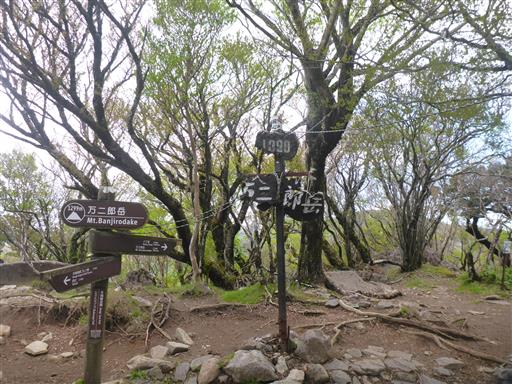
一角の展望が開ける。だいぶ霞んでいるが、山々と海が見渡せる。
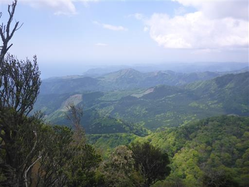
ここから万三郎岳までは天城らしい景色が広がる縦走路。
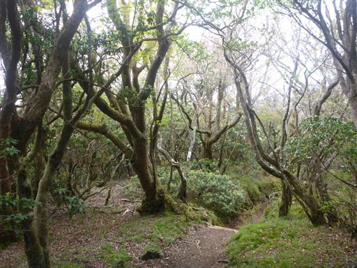
鬱蒼とした森の中に、いくらか新緑が見られる。
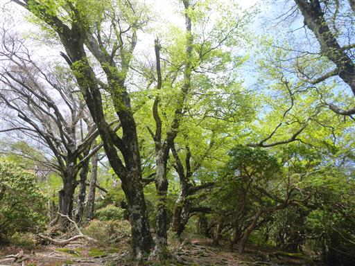
シャクナゲの花が最盛期だ。
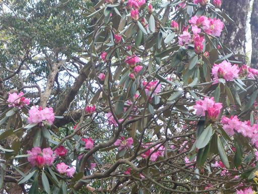
山頂までもうすぐ。
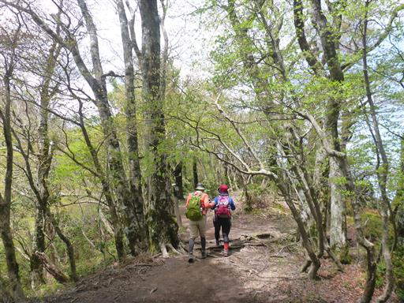
万三郎岳に到着。天城山の最高峰。標高1406m。
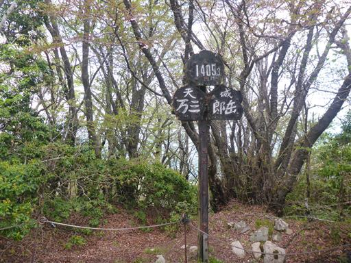
桜の花が咲いている。残念ながら山頂からは全く展望が広がらない。

昼食を取ったら別コースを下山する。
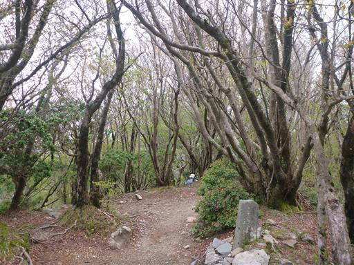
下りに使った道は荒れていて、階段が多く流されている。
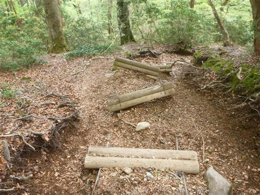
沢筋周辺は新緑が美しい。
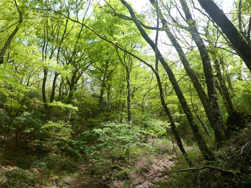
淡い色のシャクナゲ。
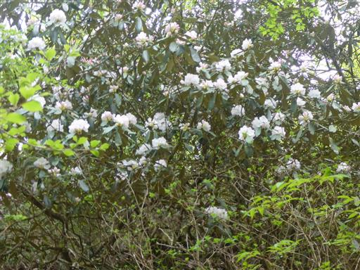
こちらは登りの時に見た花と同様、濃い色のシャクナゲだ。
この辺りはアマギシャクナゲという固有種が自生しているが、見分け方は分からない。
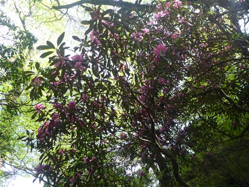
周囲は苔に覆われている。
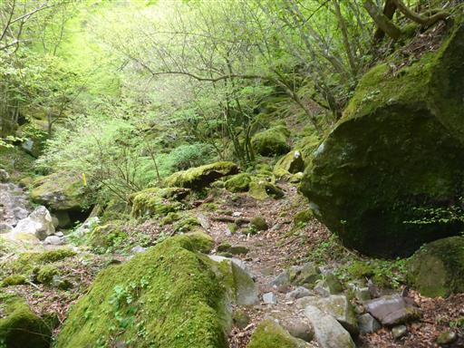
ワダソウだろうか？
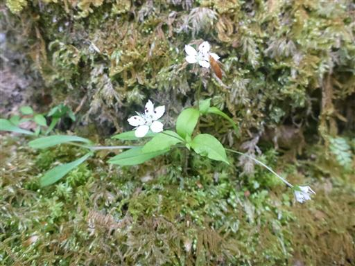
無事下山。山の中ではかなり雲が出ていたが、下山するときれいに晴れ渡っている。
派手さは無い山だったが、天城の森とシャクナゲの花を楽しむことができた。
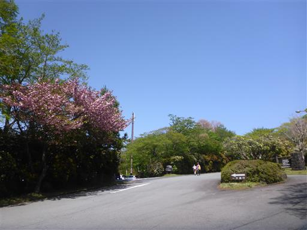